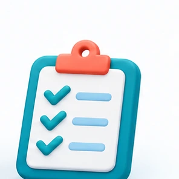
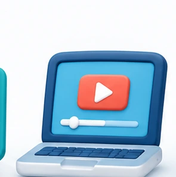
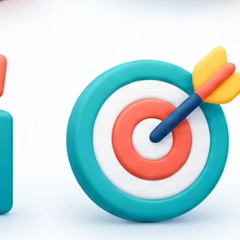

BELAJAR BIJAK · LATIHAN DIGITAL
Belajar lebih yakin.
Skor lebih hebat.
Latihan ulang kaji Tahun 4 hingga Tingkatan 5 dan persediaan MUET untuk pelajar diploma. Pilih pakej mengikut tahap, belajar ikut rentak sendiri.
✓ Latihan berfokus ✓ Semak jawapan ✓ Mesra telefon

Latihan berstrukturBelajar mengikut tahap
Mudah digunakanLatihan di mana-manaUji kefahamanKuiz dan semakan segera
MULA DI SINI
Pilih tahap pembelajaran
Empat laluan mudah untuk cari latihan yang sesuai.
PILIHAN PEMBELAJARAN
Pakej ulang kaji
Harga di bawah ialah contoh untuk demonstrasi.
Tiada pakej yang sepadan. Cuba kata kunci lain.
CARA BELAJAR
Belajar dalam tiga langkah
Pilih latihan, jawab soalan dan semak kefahaman anda.

01Pilih tahapIkut tahun, tingkatan atau MUET02Buat latihanJawab mengikut rentak sendiri
03Semak kemajuanKenal pasti perkara untuk diperbaiki
Soalan yang sering ditanya
Adakah latihan percuma disediakan?
Ya. Cuba kuiz demonstrasi melalui butang “Latihan percuma”.
Adakah pembelian dan pembayaran sudah aktif?
Belum. Troli dan harga dalam versi ini adalah demonstrasi sahaja. Tiada pembayaran sebenar diproses.
Adakah pakej MUET untuk pelajar diploma?
Ya. Kategori MUET memaparkan latihan Reading, Writing, Listening dan Speaking sebagai contoh katalog.